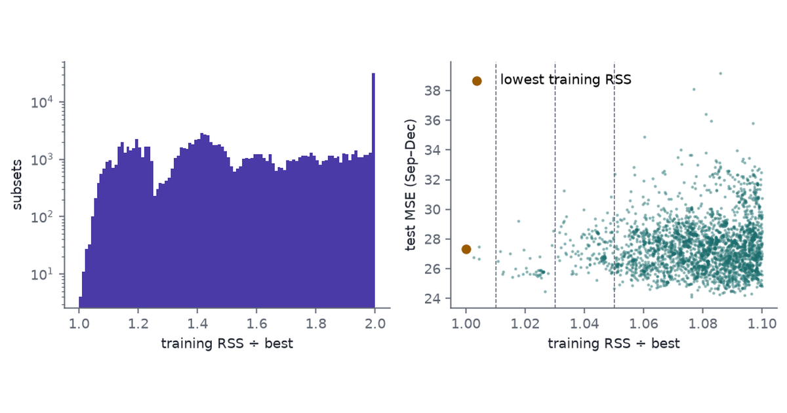
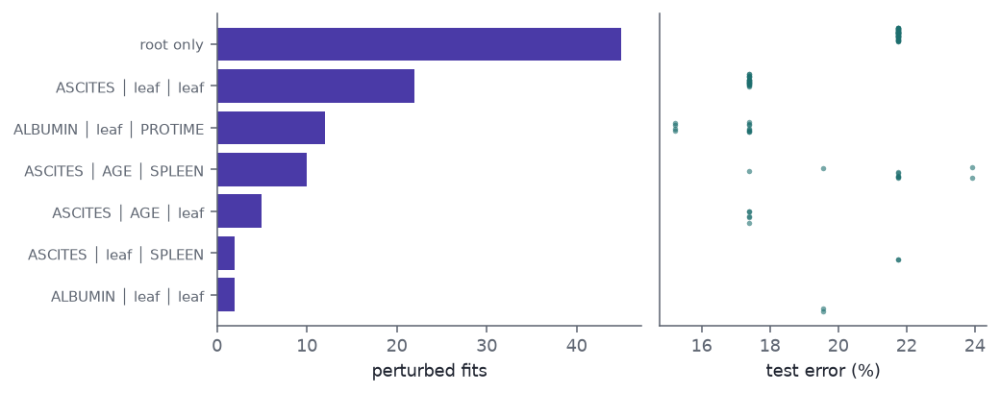
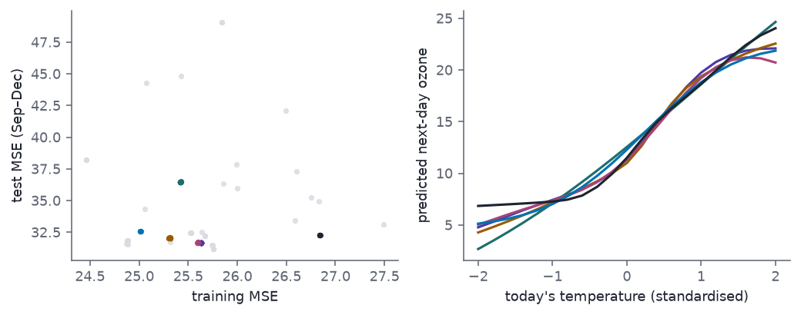
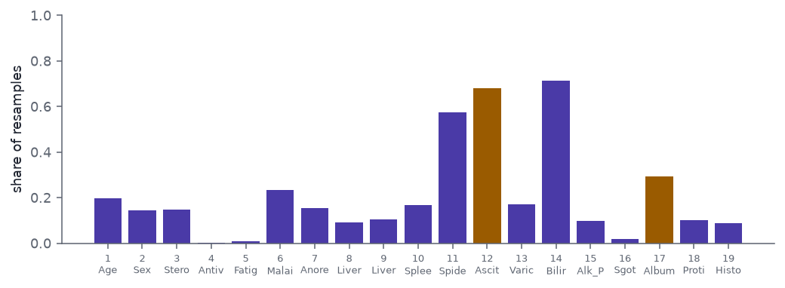

The Two Cultures, Part 2: Rashomon, or Many Equally Good Models
Five-variable regressions on 1976 ozone, trees on hepatitis, a network from 100 starts, and what bagging does to an unstable choice
Breiman’s Rashomon effect: many different models fit about equally well and tell different stories. All 142,506 five-variable regressions on the 1976 LA ozone record, pruned trees refitted after removing 3% of the hepatitis data, a small network restarted 100 times, and best-subset logistic regression single and bagged, with an explorer for the subset fits.
Statistics
Machine Learning
Reading
Author
Ravi Kalia
Published
November 18, 2026

The Two Cultures, Part 2: Rashomon, or Many Equally Good Models
A fitted model that explains the data well is usually one of many that explain it about as well, and those models can disagree about which inputs matter.
Anyone who has run stepwise regression twice, on last year’s data and then this year’s, has seen this. The fit barely changes and the list of “significant” variables does. The usual reading is that the second run found the truth or the first one did. Breiman’s reading, in section 8 of The Two Cultures, is that neither did: the data never picked one model, and the procedure picked one at random from a crowd.
Part 1 set out Breiman’s two cultures and re-ran his ozone forecast. This part tests his first lesson from machine learning on data close to his own. Part 3 takes the second and third.
This part covers two ideas:
The Rashomon effect. Many models with different structure have nearly the same error, and each tells a different story about the inputs.
Instability and its repair. A procedure that picks one model from such a crowd jumps between them when the data change slightly. Averaging over the crowd (bagging) gives up the single story and recovers accuracy.
1 The name
Rashomon is Akira Kurosawa’s 1950 film, built from two stories by Ryūnosuke Akutagawa, “In a Grove” and “Rashōmon”. In Breiman’s summary, four witnesses to a death in a forest report the same facts and tell very different stories about what happened. His statistical version (p. 206): in a class of functions there is often a multitude of different descriptions, all with about the same minimum error.
He gives three examples:
Subsets. With 30 variables there are about 140,000 five-variable regressions, and generally many have residual sum of squares within 1% of the lowest. He prints three on disjoint variables, each telling a different story (p. 206).
Trees. Removing a random 2–3% of the training set can give a quite different tree with almost the same test error (p. 206).
Networks. A small net run 100 times on simple three-dimensional data from small random starting weights found 32 distinct minima, each a different picture, with about equal test error (p. 206).
The three equations he prints are illustrations, and the data behind all three examples are not given. Each is re-run here on public data close to his.
2 Data
1976 Los Angeles ozone (mlbench::Ozone), as in Part 1: next-day maximum ozone from days \(t\), \(t-1\) and \(t-2\) of eight meteorological readings and ozone, plus season and a weekend flag. That makes 30 candidate predictors, the count in Breiman’s subset example. Training January–August (189 day pairs), test September–December (93). Ozone is a forecasting problem of the kind he worked on, and its predictors are correlated the way weather is, which is what makes many subsets compete.
Hepatitis (UCI, contributed by Gail Gong): 155 patients, 19 covariates, 32 deaths. Breiman’s own example in section 11; Part 4 reproduces his analysis. Its small size and correlated laboratory values are the conditions under which a tree or a variable list is unstable, and its users wanted a short list of prognostic variables, which is the output that instability corrupts.
Sources, licences and checksums are in the series’ data/README.md.
3 Five-variable regressions
3.1 Every subset
There are \(\binom{30}{5} = 142{,}506\) five-variable regressions. Fitting them all takes a fraction of a second: each fit needs only a \(5 \times 5\) block of the Gram matrix \(X^\top X\), and the blocks are solved as one batch.
Code
names, fits = rashomon_exp.ozone_subsets()ratio = fits["rss"] / fits["rss"].min()test = fits["test_mse"]counts = {t: int((ratio <=1+ t).sum()) for t in (0.01, 0.02, 0.03, 0.05, 0.10)}oz_in = names.index("ozone_lag0")w5 = ratio <=1.05share_oz_5 =float(np.isin(fits["idx"][w5], [oz_in]).any(1).mean())best =int(np.argmin(ratio))best_test =int(np.argmin(test))w3 = ratio <=1.03t3_lo, t3_hi =float(test[w3].min()), float(test[w3].max())inc3 = np.array([np.isin(fits["idx"][w3], [j]).any(1).mean() for j inrange(len(names))])always3 = [names[j] for j in np.flatnonzero(inc3 ==1)]rank_of_best_on_test =int((test < test[best]).sum()) +1
Within 1% of the lowest training RSS: 4 models. Breiman says there are generally many; on 189 training days there are few.
Within 2%, 3%, 5% and 10%: 15, 42, 175 and 2,886 models.
Today’s ozone is in 100% of the models within 5%. The disagreement is about the meteorology.
On the test months, the models within 3% have test MSE from 24.5 to 29.2. The model with the lowest training RSS ranks 12,533 of 142,506 on test error.
Figure 1: All 142,506 five-variable regressions of next-day ozone. Left: training RSS as a multiple of the best, log-scale counts, ratios above 2 pooled at 2. Right: training RSS ratio against test MSE for the 2,886 models within 10% of the best; the dashed lines mark 1%, 3% and 5%.
3.2 Three pictures
Breiman’s three pictures share no variables. The three here are picked from the models within 5% so that each overlaps the others as little as possible. They cannot be disjoint, because all of them keep today’s ozone.
Code
order = np.where(w5)[0][np.argsort(ratio[w5])]picked = []for _ inrange(3): best_i, best_ov =None, 99for i in order:if i in picked:continue ov =sum(len(set(fits["idx"][i]) &set(fits["idx"][j])) for j in picked)if ov < best_ov: best_i, best_ov = i, ov picked.append(best_i)def equation(i): terms = [f"{'+'if b >=0else'−'}{abs(b):.2g}·{nice(names[j])}"for j, b inzip(fits["idx"][i], fits["coef"][i])]returnf"{fits['intercept'][i]:.1f} "+" ".join(terms)pics = pd.DataFrame([{"Picture": k +1, "RSS ÷ best": f"{ratio[i]:.3f}","Test MSE": f"{test[i]:.1f}", "Equation": equation(i)}for k, i inenumerate(picked)])pic_vars = [set(nice(names[j]) for j in fits["idx"][i]) for i in picked]md(pics)
Table 1: Three five-variable regressions within 5% of the best training RSS, chosen to overlap as little as possible. Coefficients are on the raw scales of the variables, to two significant figures; inversion base height is in feet, so its coefficient is small.
Picture
RSS ÷ best
Test MSE
Equation
1
1.000
27.3
-13.6 + 0.53·ozone lag 0 + 0.0012·ibh lag 0 + 0.4·ibt lag 0 + 0.071·dpg lag 1 − 0.16·temp lag 2
2
1.018
29.2
-95.6 − 3.9·season_cos + 0.57·ozone lag 0 + 0.019·vh lag 0 − 0.032·dpg lag 0 − 0.13·ibt lag 1
3
1.032
28.9
-0.1 + 0.58·ozone lag 0 + 0.23·temp lag 0 − 0.2·ozone lag 1 + 0.31·ozone lag 2 − 0.16·ibt lag 2
Picture 1 forecasts from the inversion layer: its height and temperature at LAX today, plus a pressure gradient and an older temperature.
Picture 2 forecasts from the season, the upper air (500 mb height) and today’s pressure gradient, with no inversion height at all.
Picture 3 forecasts mostly from ozone itself, three days of it, plus today’s temperature and an inversion temperature from two days back.
A meteorologist reading one picture would learn something different from one reading another. The data do not choose between them.
3.3 Explorer
At the starting tolerance of 1.0%, the tiles read 4 models using 9 different variables.
Drag the tolerance to 3.0%. There are 42 models, and between them they use all 30 variables. Their test MSE runs from 24.5 to 29.2.
Drag it to 10%. The inclusion bars flatten: apart from today’s ozone, no variable is in more than half the qualifying models.
4 Trees
4.1 Design
Data. Hepatitis, with a fixed random 30% of patients held out for testing (46 patients, 10 deaths) and missing values filled with training medians.
Model. CART with cost-complexity pruning, size chosen by ten-fold cross-validation with the one-standard-error rule, as in Breiman et al. (1984).
Perturbation. Remove a random 3% of the 109 training patients (3 patients), refit, repeat 100 times.
Code
tree_rows, tree_info = (lambda o: (o["rows"], o["info"]))(cache.obj("trees_v2", lambda: dict(zip(["rows", "info"], rashomon_exp.tree_perturbations(reps=100)))))tr = pd.DataFrame([{k: v for k, v in r.items() if k !="structure"} for r in tree_rows])pert = tr[tr["rep"] >0]root_counts = pert["root"].value_counts()sig_counts = pert["signature"].value_counts()base_err =float(tr.loc[tr["rep"] ==0, "test_error"].iloc[0])err_lo, err_hi =float(pert["test_error"].min()), float(pert["test_error"].max())n_sig =int(pert["signature"].nunique())n_stump =int(root_counts.get("leaf", 0))split = pert[pert["root"] !="leaf"]base_rate = tree_info["test_deaths"] / tree_info["n_test"]split_lo, split_hi =float(split["test_error"].min()), float(split["test_error"].max())
4.2 Result
No split at all. The tree fitted to the full training set splits first on ascites. In 45 of the 100 perturbed fits the one-standard-error rule prunes the tree back to its root: on about 106 patients, predicting that everyone lives is within one standard error of the best cross-validated tree.
Root split, when there is one. Ascites 39 times and albumin 14 times; the rest go to bilirubin or prothrombin time.
Structure. Counting the root-only tree, the top two levels take 9 different forms.
Test error. 17.4% for the unperturbed tree. The root-only trees all score 21.7%, the share of the 46 test patients who died; trees with a split range from 15.2% to 23.9%. On 46 test patients one misclassification is 2.2 points: the best tree with a split gets 3 more patients right than predicting survival for everyone, and the worst gets 1 fewer.
Code
top = sig_counts.index[:7]fig, axes = plt.subplots(1, 2, figsize=(7.5, 3.0), gridspec_kw={"width_ratios": [1.3, 1]})ax = axes[0]labels = ["root only"if s =="leaf"else s.replace("SPLEEN_PALPABLE", "SPLEEN").replace(" / ", " │ ")for s in top]ax.barh(range(len(top))[::-1], sig_counts[top].to_numpy(), color=PURPLE)ax.set_yticks(range(len(top))[::-1], labels, fontsize=7.5)ax.set_xlabel("perturbed fits")ax = axes[1]for k, s inenumerate(top): e = pert.loc[pert["signature"] == s, "test_error"].to_numpy() jitter = np.random.default_rng(k).uniform(-0.15, 0.15, len(e)) ax.scatter(100* e, len(top) -1- k + jitter, s=8, color=TEAL, alpha=0.6, lw=0)ax.set_yticks([])ax.set_xlabel("test error (%)")fig.tight_layout()plt.show()

Figure 2: Pruned CART on hepatitis after removing 3 of 109 training patients, 100 times. Left: the split variables of the top two levels (root first, then left and right child; ‘leaf’ means no further split, and ‘root only’ a tree with no split at all). Right: test error on the 46 held-out patients for each form.
Breiman’s point survives in a sharper form: removing three patients changes not just which variable a tree uses but whether it uses any. The swap between ascites and albumin is not noise in the tree algorithm. The two are each other’s strongest correlate in these data, and Breiman’s section 11 analysis finds them to be surrogates: either carries most of what the other does. A tree must pick one, and which one depends on three patients. Part 4 returns to the pair.
5 Networks
5.1 Design
Data. The ozone training months, three predictors: today’s temperature, inversion base height and pressure gradient. Three standardised inputs is the “simple three-dimensional data” of Breiman’s account.
Model. One hidden layer of 3 tanh units (16 weights), light weight decay (\(\alpha = 0.01\)), fitted to convergence by L-BFGS from scikit-learn’s default random starting weights.
Restarts. 100, identical in everything but the starting weights.
Distinct minima. Two restarts count as the same minimum when their fitted values on the 189 training days differ by less than 0.1 ozone units (root mean square). Comparing functions rather than weights ignores the trivial symmetries: the hidden units can be relabelled, and each unit’s signs flipped, without changing the function.
Code
net_rows = cache.obj("nets_v2", lambda: {"rows": rashomon_exp.net_restarts(reps=100)})["rows"]labels = {t: rashomon_exp.distinct_minima(net_rows, t) for t in (0.05, 0.1, 0.2)}nets = pd.DataFrame([{"rep": r["rep"], "train_mse": r["train_mse"], "test_mse": r["test_mse"]}for r in net_rows])nets["group"] = labels[0.1]n_groups = {t: int(v.max() +1) for t, v in labels.items()}g = nets.groupby("group").agg(k=("rep", "size"), train=("train_mse", "mean"), test=("test_mse", "mean"))big = g.sort_values("k", ascending=False)q10, q90 = nets["test_mse"].quantile([0.1, 0.9])
5.2 Result
Distinct functions. 28 from 100 starts; the count is 28 at a tolerance of 0.05 and 28 at 0.2, so it does not hinge on the threshold. Breiman found 32 on his data; the count depends on the data, the width of the net and the weight decay, so the agreement in size means little.
Most common minimum. Reached from 31 starts; 14 minima are reached from one start only.
Training error ranges from 24.5 to 27.5.
Test error. 80% of restarts fall between 31.7 and 36.5; the worst is 49.1. “About equal test error” holds for most, not all.
Code
cols = [PURPLE, TEAL, AMBER, PINK, BLUE, INK]top6 =list(big.index[:6])fig, axes = plt.subplots(1, 2, figsize=(7.5, 3.0))ax = axes[0]for gi, c inzip([None] + top6, [RULE] + cols): m =~nets["group"].isin(top6) if gi isNoneelse nets["group"] == gi ax.scatter(nets.loc[m, "train_mse"], nets.loc[m, "test_mse"], s=14, color=c, alpha=0.85, lw=0)ax.set_xlabel("training MSE")ax.set_ylabel("test MSE (Sep–Dec)")ax = axes[1]xs = np.linspace(-2, 2, 21)for gi, c inzip(top6, cols): r = net_rows[int(nets.loc[nets["group"] == gi, "rep"].iloc[0])] ax.plot(xs, r["pd_temp"], color=c, lw=1.6)ax.set_xlabel("today's temperature (standardised)")ax.set_ylabel("predicted next-day ozone")fig.tight_layout()plt.show()

Figure 3: One 3-unit network, 100 random starts, ozone training months. Left: training against test MSE, one point per start, coloured by minimum (the six most common in colour, the rest grey). Right: the fitted effect of today’s temperature (partial dependence, other inputs at their observed values) for the six most common minima.
The minima agree where the data are dense and part company at the edges, which is where a forecaster most wants the model’s opinion: hot days.
6 Best-subset logistic regression, single and bagged
6.1 Breiman’s account
Breiman reports that cutting a logistic or Cox model from 15 variables to 4 makes it unstable: perturb the data and a different four-variable model, with a different conclusion, appears (p. 206). He cites Arena et al. (2000), who bagged logistic regressions on toxicity data with best-subset selection from 15 covariates to 4 and found the bagged model significantly more accurate on a test set, and more stable. That work was a conference presentation, and the data are not public.
6.2 Design
Data. Hepatitis, 19 covariates, as a stand-in for the toxicity data.
Selection rule. The best four covariates by the score statistic, the criterion behind SAS’s best-subset search for logistic regression. At the intercept-only fit it equals \(n R^2\) of a least-squares fit of the 0/1 outcome on the subset, so all \(\binom{19}{4} = 3{,}876\) subsets are scored in one batch.
Fit. Median imputation and standardisation inside the training data, then unpenalised logistic regression on the chosen four.
Bagged version. Repeat selection and fit on 50 bootstrap resamples of the training data and average the predicted probabilities.
Evaluation. Breiman’s protocol: 100 random 10% holdouts, both versions on the same splits.
Stability. In the spirit of Diaconis and Efron (1983): rerun the selection on 500 bootstrap resamples of all 155 patients and count which covariates it picks.
Code
bag = cache.frame("bagged_v1", lambda: rashomon_exp.bagged_logistic(reps=100))diff = bag["single"] - bag["bagged"]sel = cache.obj("selection_v1", lambda: dict(zip(["picks", "full", "names"], rashomon_exp.selection_frequency(boots=500))))picks, full, hep_names = sel["picks"], sel["full"], sel["names"]freq = pd.Series(collections.Counter(i for p in picks for i in p)).reindex(range(19), fill_value=0) /len(picks)n_sets =len({tuple(sorted(p)) for p in picks})modal_set, modal_n = collections.Counter(tuple(sorted(p)) for p in picks).most_common(1)[0]either =float(np.mean([(11in p) or (16in p) for p in picks]))both =float(np.mean([(11in p) and (16in p) for p in picks]))
6.3 Result
Accuracy. The single best-subset model misclassifies 19.1% of held-out patients, the bagged one 16.6%. The paired difference is 2.6 percentage points, with a standard error of 0.6. Calling every patient a survivor scores 20.6%, so the single model barely beats the baseline.
Full-data choice. Spiders (11), Ascites (12), Bilirubin (14), Albumin (17), numbered as Breiman numbers covariates.
Bootstrap choices. 205 different four-variable sets in 500 resamples. The most common, Steroid, Spiders, Ascites, Bilirubin, appears 22 times.
The surrogate pair. Ascites (12) or albumin (17) is in 87% of the chosen sets; both are in only 11%. Neither is picked as often as the pair is, because a set rarely needs both.
Code
fig, ax = plt.subplots(figsize=(7.5, 2.8))colors = [AMBER if i in (11, 16) else PURPLE for i inrange(19)]ax.bar(range(1, 20), freq.to_numpy(), color=colors)ax.set_xticks(range(1, 20), [f"{i +1}\n{hep_names[i][:5].title()}"for i inrange(19)], fontsize=6.5)ax.set_ylabel("share of resamples")ax.set_ylim(0, 1)fig.tight_layout()plt.show()

Figure 4: Share of 500 bootstrap resamples of the hepatitis data in which the best-subset rule picks each covariate, numbered as in Breiman’s paper. Ascites (12) and albumin (17) are highlighted.
Bagging helps here for the reason Breiman gives. The single model’s error includes the cost of picking the wrong four, and averaging over 50 picks lowers that cost. The price is the one he names: the bagged model has no four variables to report.
7 Hoadley’s Fat Scorecard
Hoadley’s comment (p. 222) reports the same effect from credit scoring. Fitting logistic scorecards on 36 candidate characteristics, he found that every model with anywhere from 27 to 36 characteristics had the same test performance, and he named it Rashomon. He kept the 27-characteristic model: 162 coefficients, one of them significant at 5%, which slightly beat a neural network with 2,000 weights. Part 3 returns to it as an argument about interpretability.
8 Since 2001
The idea has since been given a name and a formal treatment.
The Rashomon set. Semenova, Rudin and Parr (2022) define it as all models in a class within a tolerance of the best loss, which is what the subset explorer shows. They argue that when the set is large it often contains a simple model.
Model class reliance. Fisher, Rudin and Dominici (2019) measure a variable’s importance as a range over the Rashomon set rather than for one model. This post does not compute that range, but the subsets fix one end of it: a model that leaves a variable out does not rely on it, and within 3% of the best RSS 29 of the 30 candidates are left out of at least one qualifying model. The exception is today’s ozone, which every one of them uses.
Underspecification. D’Amour et al. (2022) find the same effect in deep learning: models trained with different seeds agree on the held-out test set and disagree under distribution shift. The networks in Section 5 diverge at the edge of the data.
9 Constraints
Sample sizes are small. 189 training days for the subsets and networks, 109 training patients for the trees, 155 patients for bagging. Breiman’s “many within 1%” presumably came from a larger sample; ours gives 4.
Test sets are small. 93 ozone days and 46 hepatitis patients. Differences in test error of a few percent between Rashomon models are within the noise of a single test set.
The selection rule is a stand-in. Arena et al. used best-subset selection from 15 to 4 on toxicity data; this is the same rule from 19 to 4 on hepatitis.
Minima counts depend on choices. Width, weight decay and the tolerance all move the count of distinct network minima.
10 Reproduction status
Table 2: Part 2’s rows of the series reproduction table.
Experiment
Paper’s data
Data used here
Paper’s result
Our result
Notes
Subsets (§8)
30 variables, not given
30 ozone predictors, 1976
many within 1% of best RSS
4 within 1%, 175 within 5%; different stories
all share today’s ozone
Trees (§8)
not given
hepatitis, 3% removed
different tree, same test error
no split 45, root ascites 39, albumin 14 of 100; 9 top-level forms; test error 15%–24%
reproduced in kind
Networks (§8)
simple 3-D data, not given
3 ozone predictors
32 distinct minima, equal test error
28 distinct functions; 80% of test MSE in 31.7–36.5
count depends on architecture
Bagged logistic (§8)
toxicity data (Arena et al.)
hepatitis, 19 → 4
bagged significantly more accurate, more stable
19.1% single vs 16.6% bagged; 205 distinct 4-sets in 500 bootstraps
Arena, V. C., Sussman, N., Chiang, K., Mazumdar, S., Macina, O. & Li, W. (2000). Bagging structure-activity relationships: a simulation study for assessing misclassification rates. Presented at the Second Indo-U.S. Workshop on Mathematical Chemistry, Duluth. Cited by Breiman; not published.